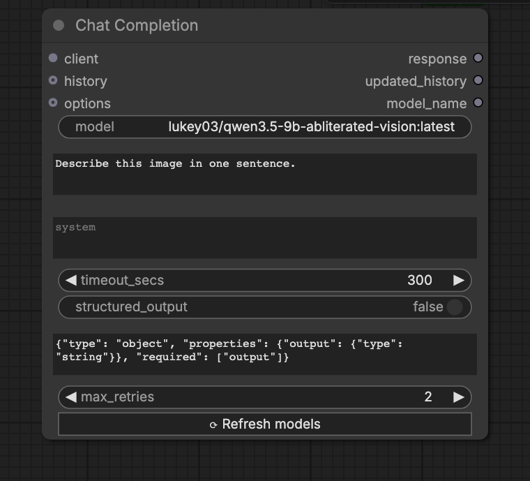
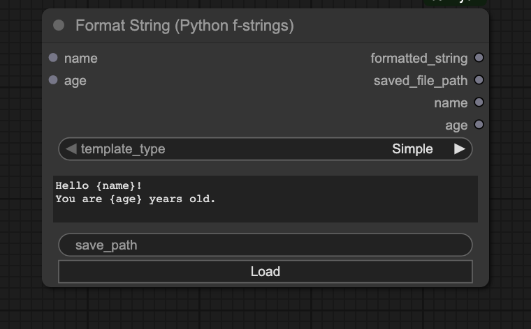
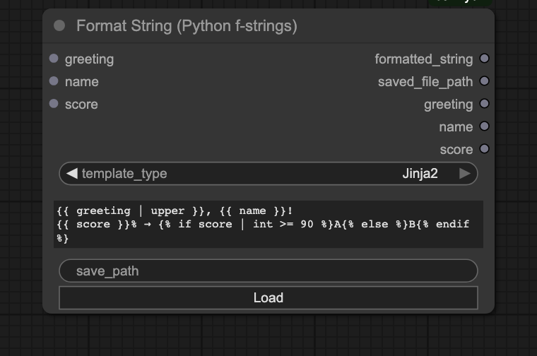
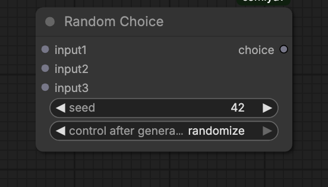
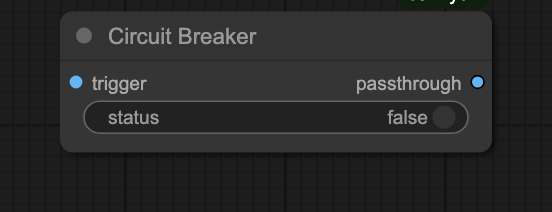
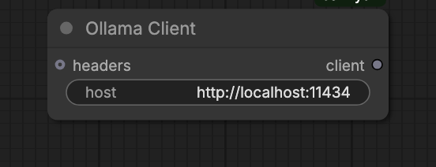
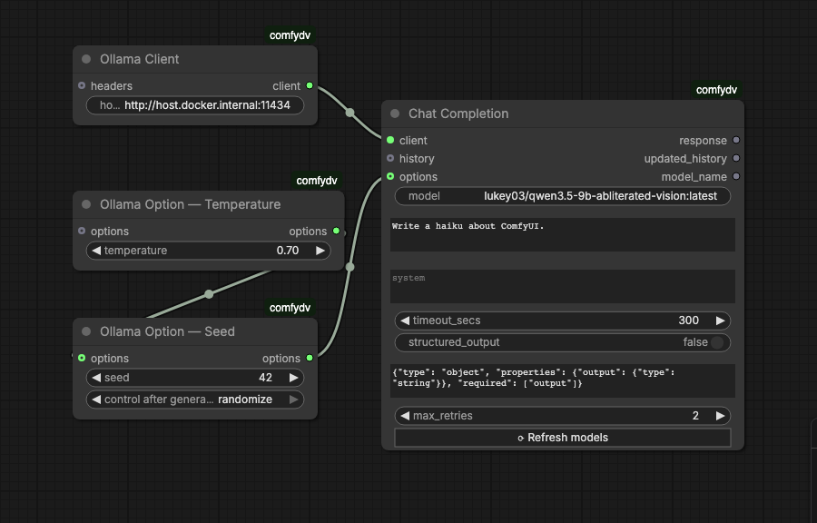
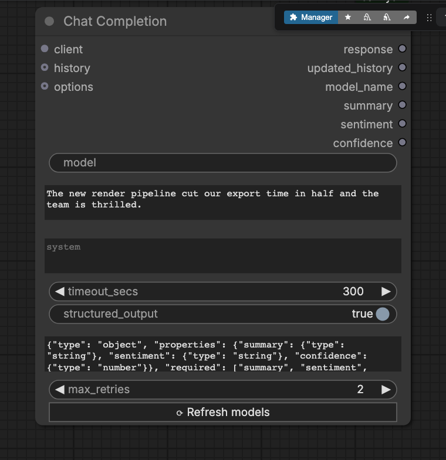
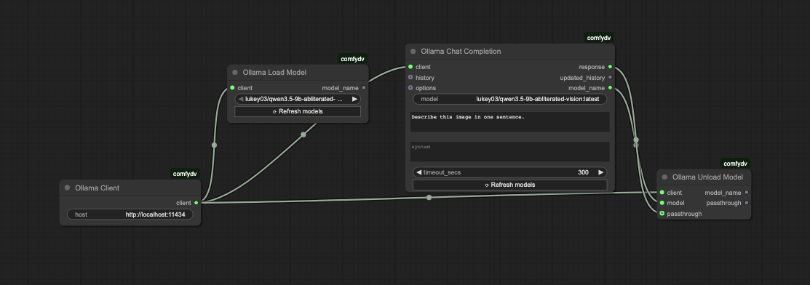
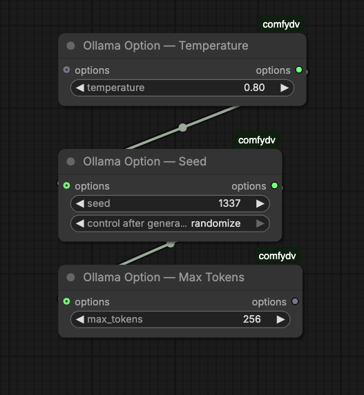

comfydv
Quality-of-life nodes for ComfyUI.

What is this
comfydv is a node pack for ComfyUI. It is for ComfyUI users, and you do not need to know Python to use it. It has two parts:
- Utility nodes. Format String builds text from a template and adds an input socket for each variable as you type. Random Choice selects one input with a seed. Circuit Breaker stops a queue run cleanly.
- Local LLM nodes. They chat with a model on your own computer, through Ollama or llama.cpp. One client node selects the backend, and all the other nodes operate with both.
Each node has unit tests. The tests of the LLM nodes also run against a real Ollama server.
What you can do
| Task | Node or command | Section |
|---|---|---|
| Install comfydv | ComfyUI Manager: search for comfydv |
Install |
| Test the next release | git checkout develop in custom_nodes/comfydv |
Install |
| Use comfydv in your own Python program | pip install comfydv |
Install |
| Build text from a template | Format String | Build text from a template |
| Select one input at random | Random Choice | Select one input at random |
| Stop a run when a check fails | Circuit Breaker | Stop a run when a check fails |
| Chat with a local model | Ollama Client → Chat Completion | Chat with a local model |
| Get typed fields from a model | Chat Completion with structured_output |
Get typed fields from a model |
| Ask a model about an image | Chat Completion with image |
Ask a model about an image |
| Load and unload a model | LLM Load Model → LLM Unload Model | Control model memory |
| Change how the model generates text | Ollama Option nodes | Change how the model generates text |
| Continue a conversation | updated_history → history |
Continue a conversation |
| Use llama.cpp | LlamaCpp Client | Use llama.cpp instead of Ollama |
| Connect to a server that needs a password | Ollama Header nodes | Connect to a server that needs a password |
| Open an old workflow | Replace each old node with the new node from the table | Open a workflow from an older version |
| Control telemetry | Set an environment variable | Control telemetry |
Install
With ComfyUI Manager (recommended): search for comfydv. Click Install.
By hand:
cd /path/to/ComfyUI/custom_nodes
git clone https://github.com/darth-veitcher/comfydv.git
Run this command with the Python of ComfyUI, from the same directory:
pip install -r comfydv/requirements.txt
Restart ComfyUI. The nodes are in the node menu under dv/string_operations, dv/utils, dv/ollama and dv/llamacpp.
ComfyUI Manager installs the Python packages from requirements.txt for you: jinja2, pydantic, pydantic-ai-slim and pydantic-ai-harness.
Choose a version:
- ComfyUI Manager installs the last release. The Manager calls it latest.
- A
git clonegets themainbranch.mainchanges only when a release pull request merges. Usually, it has the code of the last release. - To test the next release, use an install that you made with
git clone. Rungit checkout developincustom_nodes/comfydv. Then runpip install -r requirements.txtagain. Restart ComfyUI.developcan contain work that is not finished.
As a Python package: comfydv is also on PyPI. ComfyUI does not load nodes from a package that pip installs. Use the package to use comfydv's Python code, for example the LLM providers, in your own program.
pip install comfydv # the last release
pip install --pre comfydv # the last pre-release, from develop
A pre-release has a version like 0.2.0.dev2: the second pre-release before 0.2.0. For pip, 0.2.0.dev2 is a lower version than 0.2.0. pip installs a pre-release only when you add --pre, give its exact version, or PyPI has no stable version of comfydv yet.
The LLM nodes need a backend that you install yourself:
- Ollama: install Ollama. Start it with
ollama serve. Download a model withollama pull qwen2.5:latest. - llama.cpp: build or install
llama-server. Start it in router mode, as Use llama.cpp instead of Ollama shows.
Quickstart
This example builds a prompt from a template. It needs no LLM backend.
- Right-click the canvas.
- Select Add Node → dv → string_operations → Format String (Python f-strings).
- Set
template_typeto Simple. - Type
A photo of {subject} in the style of {style}intemplate. - Find the two new inputs,
subjectandstyle, on the node. - Type
a red foxinsubjectandwatercolourinstyle. - Click Queue.
The node shows A photo of a red fox in the style of watercolour. The formatted_string output gives the same text to the next node. To send it to a model, connect it to the prompt input of Chat Completion (see Chat with a local model).
The full documentation, with the inputs and outputs of each node, is at darth-veitcher.github.io/comfydv.
Build text from a template
Type a template in Format String. Write each variable as {variable_name} in Simple mode, or as {{ variable_name }} in Jinja2 mode. The node adds an input socket for each variable as you type.

| Output | Content |
|---|---|
formatted_string |
The text that the template makes |
saved_file_path |
The JSON file with the template and the input values, in the ComfyUI output directory. It is empty if you did not set save_path or if the save failed. |
| One output for each variable | The value of that input, as text, so that you can connect it to more nodes |
Set template_type to Jinja2 to use filters (| upper, | int), conditions and loops. Jinja2 templates run in a sandbox. A template can use its variables, the Jinja2 filters and functions, the fromjson filter, now() and the datetime, random and math modules. It cannot get access to files or run commands.

Select one input at random
Connect two or more inputs of the same type to Random Choice. The type can be images, text, conditioning or any other ComfyUI type. The node gives one of them.

The seed input controls the selection:
seed = 0gives a new random selection on each run.- Any other value gives the same selection on each run, so you can repeat a result.
When you disconnect an input, the node removes the empty input socket.
Stop a run when a check fails
Circuit Breaker stops the current queue run cleanly when a condition is false. Use it to stop before a node that would fail on bad input.

- Connect an image to
trigger. - Connect a boolean to
status.
If status is false, the node raises InterruptProcessingException, and ComfyUI stops the run with no error dialog. If status is true, the node gives the image to the next node, unchanged.
For example, a quality-check node can set status to false when the draft is already good. Then the run skips a slow upscale.
Chat with a local model

- Add Ollama Client and set
host. The default ishttp://localhost:11434. - Add LLM Model Selector. Select a model from the list. Click ⟳ Refresh models to get the current list from the server. Or type a model name in the
modelinput of Chat Completion. - Add Chat Completion. Connect
client,modelandprompt. - Click Queue.
The node shows the response, and the response output gives it to the next node. The other outputs are:
| Output | Content |
|---|---|
updated_history |
The conversation so far, for the next Chat Completion |
model_name |
The model that answered |
seed_used |
The seed of the attempt that succeeded. Use it to repeat a result. |
A complete graph looks like this:

Two inputs control how long the node waits:
timeout_secs(30 to 3600, default 300) is the time limit of one request. Retry N gets N + 1 timestimeout_secs. For example, the first retry of a 300-second limit gets 600 seconds.max_retries(0 to 5, default 2) is the number of retries. A retry occurs after an empty response, a response that is not valid, or a refusal (when Refusal Retry is on). 0 means one attempt only. Each retry uses a new seed.
If the server is not available, the node shows an error that names the host.
Get typed fields from a model
Set structured_output to true on Chat Completion. Then write a JSON Schema in output_schema. A JSON Schema is a description of the fields that you want and of their types.
{"type": "object", "properties": {"subject": {"type": "string"}, "count": {"type": "integer"}}, "required": ["subject"]}
The node adds one output for each field, with a ComfyUI type: STRING, INT, FLOAT or BOOLEAN. The response output gives all the fields as one JSON text. If the model does not give a valid value for each required field, the node retries. After the last retry, it stops with an error.

Ask a model about an image
Connect an IMAGE to the image input of Chat Completion. A vision model can then describe the image, answer questions about it or read its text. A vision model is a model that accepts images.
- Ollama: use a vision model, for example a llava model.
- llama.cpp: start
llama-serverwith the projector file of the model:--mmproj <projector.gguf>.
The image input operates the same on both backends. You can use it with structured output, with history and with the option nodes. A batch of images goes to the model as more than one image in the same message. If you do not connect image, the node sends only text.
Control model memory
On a computer with one GPU, a model can use the VRAM that your image pipeline needs. Use these two nodes to control when a model is in memory:
- LLM Load Model loads a model into memory.
- LLM Unload Model removes the model from memory immediately.

Connect the nodes in this sequence. The connections make ComfyUI run them in this order:
- Connect
LLMLoadModel.model_nametoChatCompletion.model. Then the model loads before the chat starts. - Connect
ChatCompletion.model_nametoLLMUnloadModel.model. Then the model unloads after the chat ends. - Optional: connect
ChatCompletion.responsetoLLMUnloadModel.passthrough. Then the unload node gives the response to the next node, unchanged.
Change how the model generates text
Connect one or more Ollama Option nodes in a chain. Connect the chain to the options input of Chat Completion. The column "Backends" shows where each option has an effect. The column "Parameter" gives the name to use in Extra Body.

| Option node | Parameter | Default (range) | What a value means | Backends |
|---|---|---|---|---|
| Temperature | temperature |
0.8 (0 to 2) | Lower gives more predictable text. Higher gives more varied text. | Ollama |
| Seed | seed |
0 | A fixed seed with the same input gives the same output. | Ollama (llama.cpp: retries only) |
| Max Tokens | num_predict |
512 (1 to 131072) | The maximum length of the response, in tokens. | Ollama |
| Top P | top_p |
0.9 (0 to 1) | Lower makes the model select only from its most probable words. | Ollama |
| Top K | top_k |
40 (0 to 100) | The number of most probable words that the model selects from. | Ollama |
| Repeat Penalty | repeat_penalty |
1.1 (0 to 2) | Higher makes the model repeat itself less. | Ollama |
| Disable Thinking | think (false disables thinking) |
on | On: a thinking model answers without its reasoning step. This is faster. | Both |
| Refusal Retry | refusal_retry |
on | Retries with a new seed when the response looks like a refusal. | Both |
| Extra Body | any | {} |
Your own JSON values, added to the options. | Ollama |
Refusal Retry finds refusals with a list of known phrases. You can add your own phrases in custom_phrases, separated by commas.
To also find refusals that do not use those phrases, set embedding_model to an embedding model, for example nomic-embed-text. Use a different model from the chat model. The node then compares the response with known refusals. A response with a similarity higher than threshold (default 0.82, range 0 to 1) is a refusal. A lower threshold finds more refusals and also more false refusals.
Continue a conversation
Chat Completion gives the conversation in updated_history. It is an OLLAMA_HISTORY list of messages, each with a role and a content. Connect updated_history to the history input of the next Chat Completion to continue the conversation.
To examine a conversation, use Ollama Debug History, which shows the messages as text, or Ollama History Length, which counts them.
Use llama.cpp instead of Ollama
Replace Ollama Client with LlamaCpp Client. Its default host is http://localhost:8080. You do not change any other node.
llama.cpp must run in router mode. In router mode, llama-server loads models from a directory, not one model from -m model.gguf:
llama-server --models-dir ./models -c 8192
In router mode, llama.cpp also reports when a model is loading or downloading. Ollama reports only loaded or unloaded.
Connect to a server that needs a password
Connect an Ollama Header node to the headers input of Ollama Client or LlamaCpp Client:
- Ollama Header — Basic Auth: a user name and a password.
- Ollama Header — Bearer Token: a token, for example an API key.
- Ollama Header — Custom: any header name and value.
You can connect more than one header node in a chain. All the nodes that use the client send the headers.
Open a workflow from an older version
Some nodes have new names, so that their names do not depend on the backend. If ComfyUI reports a missing node type in an old workflow, add the new node and connect it again. The nodes operate as before.
| Old name | New name |
|---|---|
OllamaChatCompletion |
ChatCompletion |
OllamaModelSelector |
LLMModelSelector |
OllamaLoadModel |
LLMLoadModel |
OllamaUnloadModel |
LLMUnloadModel |
OLLAMA_CLIENT socket |
LLM_CLIENT socket |
OllamaClient has the same name. Connect its output to the new nodes again.
Control telemetry
comfydv connects to the servers in your graph. When it loads, it also connects to Ollama at OLLAMA_HOST, host.docker.internal:11434 or localhost:11434 to fill the model lists. It connects to no other server. Some of the libraries that it uses can send data or check for updates. comfydv turns these off when it loads, unless you set them yourself:
| Variable | comfydv default | Effect |
|---|---|---|
FASTMCP_TELEMETRY_MODE |
off |
No OpenTelemetry trace data to MCP servers |
FASTMCP_CHECK_FOR_UPDATES |
off |
No version check on PyPI |
FASTMCP_SHOW_SERVER_BANNER |
false |
No start-up message on the console |
PYDANTIC_AI_NO_BANNER |
1 |
No first-run message on the console |
To turn one on again, set its variable before you start ComfyUI. For example, set FASTMCP_TELEMETRY_MODE=native. Then configure an OpenTelemetry SDK and exporter, so that the traces go to your own collector. These settings apply to all of the ComfyUI process, so other node packs also get them.
Limits
- Circuit Breaker accepts only an
IMAGEintrigger. - Random Choice gives a random selection for
seed = 0. You cannot use 0 as a fixed seed. - The LLM nodes need a local Ollama or llama.cpp server. They do not connect to cloud model services.
- Structured output gives a typed output only for the top-level fields of the schema. A nested object or list comes out as JSON text.
- Valid structured output can still contain wrong content, especially from a small or a low-quality model.
- llama.cpp must run in router mode. A
llama-serverthat loads one model with-mdoes not operate with these nodes. - Image input needs a vision model, and llama.cpp also needs
--mmproj. - On llama.cpp, the sampling options (Temperature, Max Tokens, Top P, Top K, Repeat Penalty and Extra Body) have no effect. Set them when you start
llama-server. - On llama.cpp, the Seed node sets only the seeds of the retries.
- If another node pack loads FastMCP before comfydv, the three
FASTMCP_defaults have no effect. To be sure, set the variables before you start ComfyUI.
Technical notes
- Python: 3.11 or later.
- Releases: python-semantic-release calculates each version from the Conventional Commits. A merge to
mainthat has afeat:,fix:orperf:commit publishes to PyPI and to the Comfy Registry. A merge like that todeveloppublishes a PyPI pre-release (ADR-017). The maintainer guide is PUBLISHING.md. - Dependencies:
pydantic-ai-slim[openai,mcp]andpydantic-ai-harness[codemode]have exact version pins, because the harness requires the exact pydantic-ai version.requirements.txtis written by hand for ComfyUI Manager (ADR-003). - HTTP: the nodes use
aiohttpto talk to Ollama (ADR-004). The client node is the only place for the host and the headers (ADR-005). - Backends: one
LLMProviderinterface for Ollama and llama.cpp (ADR-007). Images go on the message (ADR-008). - Structured output: Ollama uses its native
/api/chatendpoint, because its OpenAI-compatible endpoint resets the context size on each request (ADR-009). - Disable Thinking: each backend gets the setting in its own request format (ADR-010).
- Telemetry: ADR-014.
- Logging: comfydv uses the standard
loggingmodule and is silent by default (ADR-001, ADR-002). - All decisions: project-management/ADRs/.
- License: AGPL-3.0.
Develop
Set up and run the checks:
uv sync
uv run ruff check && uv run ruff format --check
uv run ty check
uv run pytest -m "not integration and not system"
Each pull request to develop or main runs these checks in CI, on Python 3.11, 3.12 and 3.13. The branch rulesets must require the quality-gate check (see PUBLISHING.md). Open pull requests against develop.
Integration tests need Ollama at localhost:11434 (just test-integration). System tests need the Docker Compose harness (just test-system). To start ComfyUI with this repository mounted, run just up. Read AGENTS.md for the rules of the repository.
Glossary
- Backend: the server that runs the model: Ollama or llama.cpp.
- CI: the checks that GitHub runs on each pull request.
- Comfy Registry: the index of ComfyUI node packs, where ComfyUI Manager gets them.
- Conventional Commits: a commit message format that starts with a type, for example
feat:orfix:. - Embedding model: a model that changes text into a list of numbers. Texts with a similar meaning get similar numbers.
- Jinja2: a template language with variables, filters, conditions and loops.
- JSON Schema: a standard description of the fields of a JSON value and of their types.
- llama.cpp: a program that runs models on your own computer. Its server is
llama-server. - LLM (large language model): a model that reads and writes text.
- MCP (Model Context Protocol): a standard way for a model to use tools on a server.
- Node: one box on the ComfyUI canvas.
- Ollama: a program that downloads models and runs them on your own computer.
- OpenTelemetry: a standard for trace data about what a program does.
- Pre-release: a version from
develop, for tests. pip skips it unless you ask for it. - Projector: the file that lets a llama.cpp model accept images.
--mmprojloads it. - PyPI: the Python package index, where
pipgets packages. - Queue run: one run of a workflow, after you click Queue.
- Release: a version from
main, on PyPI and on the Comfy Registry. - Router mode: a llama.cpp mode that loads and unloads models from a directory.
- Sandbox: a restricted place to run code or templates, with no access to the rest of your computer.
- Seed: a number that sets the random choices. The same seed gives the same result.
- Socket: an input or an output point on a node.
- Structured output: a response that obeys a JSON Schema.
- Thinking model: a model that writes its reasoning before its answer.
- Token: a part of a word. A model counts its input and output in tokens.
- Vision model: a model that accepts images as well as text.
- VRAM: the memory on the GPU.
- Workflow: a graph of connected nodes. You can save it as a file.